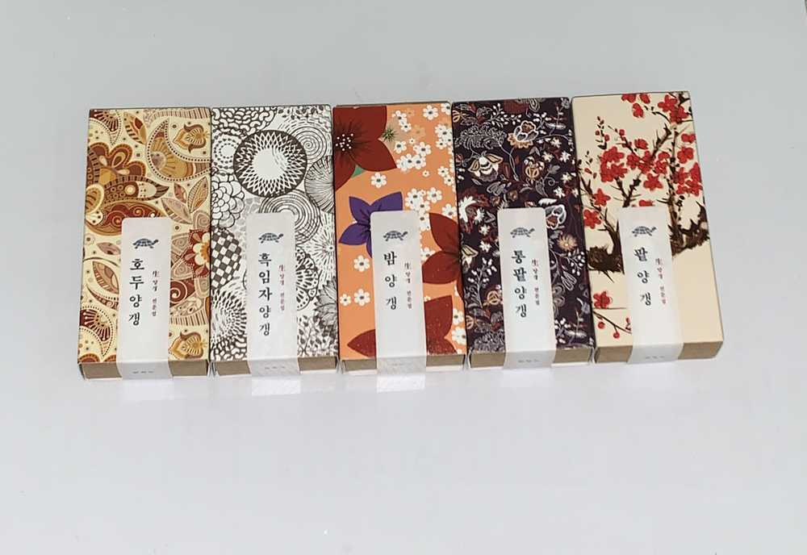

제 옆자리는 좌 채원 우 은비언니
대각선 앞 사쿠쨩 앞에 토미 나코
🌹구도🌹
쿠라. 토미. 나코
채원. 채연. 은비
옆 테이블은
원영. 유진. 민주
예나. 혜원. 유리
정말 TMI죠?? 다들 고기사진은 보내는데
자리 구도는 아무도 안 알려줄 것 같아서 ㅋㅋㅋㅋㅋㅋㅋㅋㅋㅋㅋㅋㅋㅋㅋㅋㅋㅋㅋㅋㅋㅋㅋㅋㅋㅋㅋㅋㅋㅋㅋㅋㅋㅋㅋ뭘 알려드릴까 고민하다가 ㅋㅋㅋㅋㅋㅋㅋㅋ
말한 게 자리 구도 ㅋㅋㅋㅋㅋㅋㅋㅋㅋㅋㅋㅋㅋㅋㅋㅋㅋㅋㅌㅋㅌㅋㅋㅋㅋㅋㅋㅋㅋㅋ
그리고 또
하나
⭐️🍺⚽️에서 깜짝선물을🙈

너무 좋아서
🍓🐻🍠 천장 뚫을 뻔....